Getting Started
Here you will learn how to get a Gradient notebook running alongside the fast.ai framework.
Creating an account
Firstly, you will have to create an account with Gradient
- Go to the Gradient Website.
- Confirm your account and sign in.
Creating a Notebook
Now that we have signed into our account, we can create a fast.ai notebook:
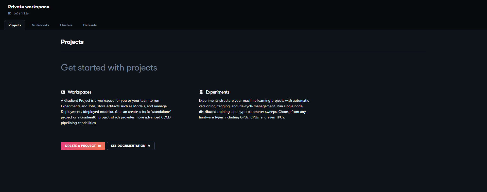- In the Notebooks tab, click "Create Notebook"
- Create a name for your Notebook 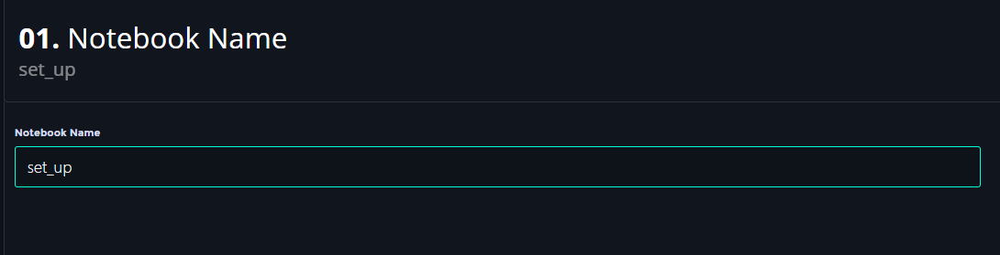
- Select "Paperspace + fast.ai" 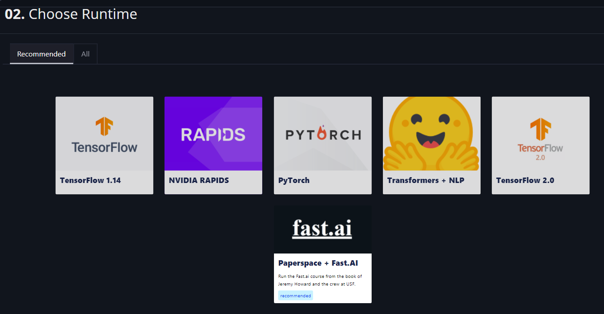
- Choose any available instance for your machine type. (A GPU instance is preferable, but we can change this later). 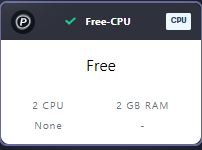
- After you confirm and create the notebook you will see your new notebook: 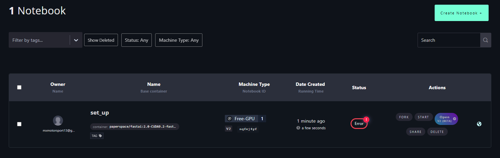
- However you may see "Error" in the status column if you are using a free machine instance.

- This error is caused because some free machine types may not be available.
FIX: you need to click the start button under the “Actions” column - Change the instance type to one of the free GPU’s. It may take a few attempts to find one that will work. You will know that a particular instance will work when the "Start Notebook" button will become selectable. 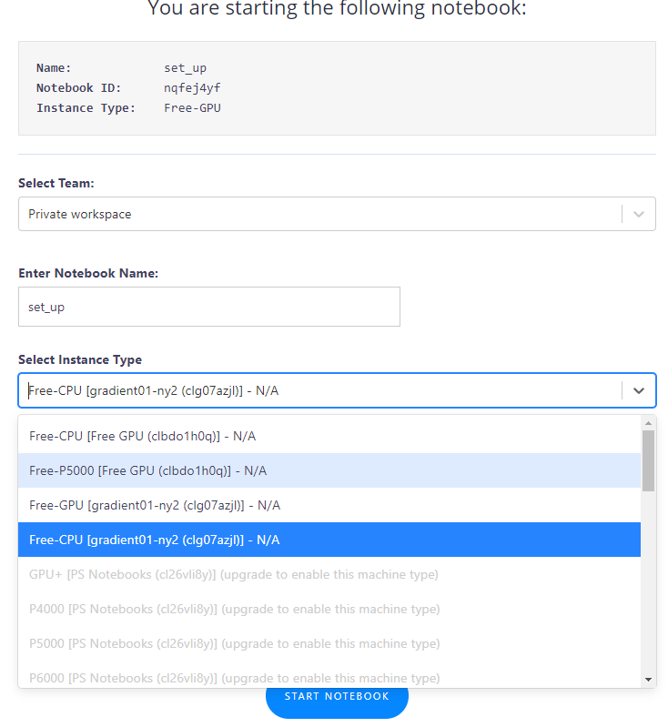
- Click “Start Notebook”
- If the instance type is available you will see the notebook starting up: 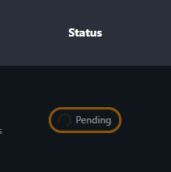
- It may take a few minutes to start running, you will know when it's done: 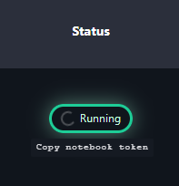
Opening a fast.ai chapter's Notebook
- Under "Actions" click one of "Open" options. (I prefer V1 and will be using it in this tutorial): 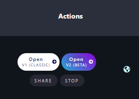
- You should see a collection of folders and notebook(.ipynb) files here.
(If you don't, and only see "Data" and "Storage" try making a new notebook following the same processes outlined previously and that should fix it.) - However, before we open one of the chapter's Notebooks we should update our fast.ai container.
- Open a terminal console by clicking the "New" button and then selecting "Terminal". 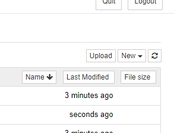
- Once your terminal is open type the following command and hit enter:
pip install fastai fastcore --upgrade - After it's finished it will look like this: 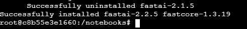
- You can now close the terminal window.
- Open whichever chapter's Notebook you wish: 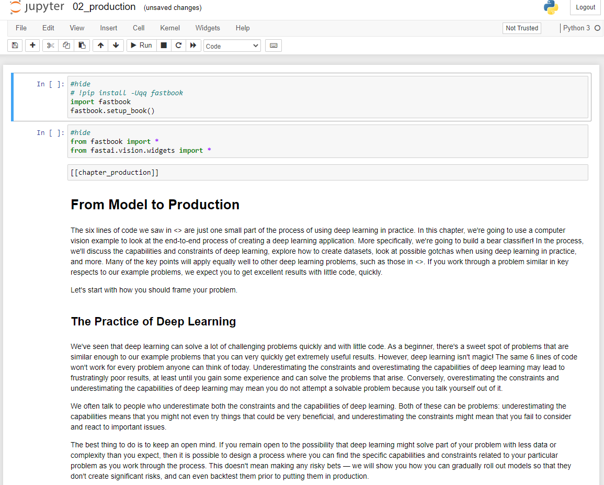
- In order to run the cells, just simply select the cell and click the "Run" button in the toolbar near the top. Have fun learning Fast.ai!